Preprint · 2026
Asymmetric Context Management in Human-Machine Interaction
Framework conceitual para persistência, recuperação e gerenciamento assimétrico de contexto em sistemas de interação humano-máquina.
Ver no ResearchGate →Um acervo vivo da trajetória científica e de desenvolvimento do fundador: pesquisas, registros visuais, propostas técnicas e documentos que ajudam a contar como as ideias foram sendo construídas ao longo do tempo.
Alguns trabalhos e registros científicos associados ao perfil público do fundador. O ResearchGate permanece como referência externa para consulta dos trabalhos.
Framework conceitual para persistência, recuperação e gerenciamento assimétrico de contexto em sistemas de interação humano-máquina.
Ver no ResearchGate →Protocolo de revisão sistemática registrado no PROSPERO, voltado ao estudo longitudinal do mapeamento cognitivo assistido por IA conversacional.
Ver no ResearchGate →Overview de revisões sistemáticas com meta-análise sobre intervenções preventivas para transtornos depressivos e bipolares.
Ver no ResearchGate →Uma galeria para explorar os materiais visuais preservados no acervo. No celular, deslize com o dedo; no computador, use as setas.
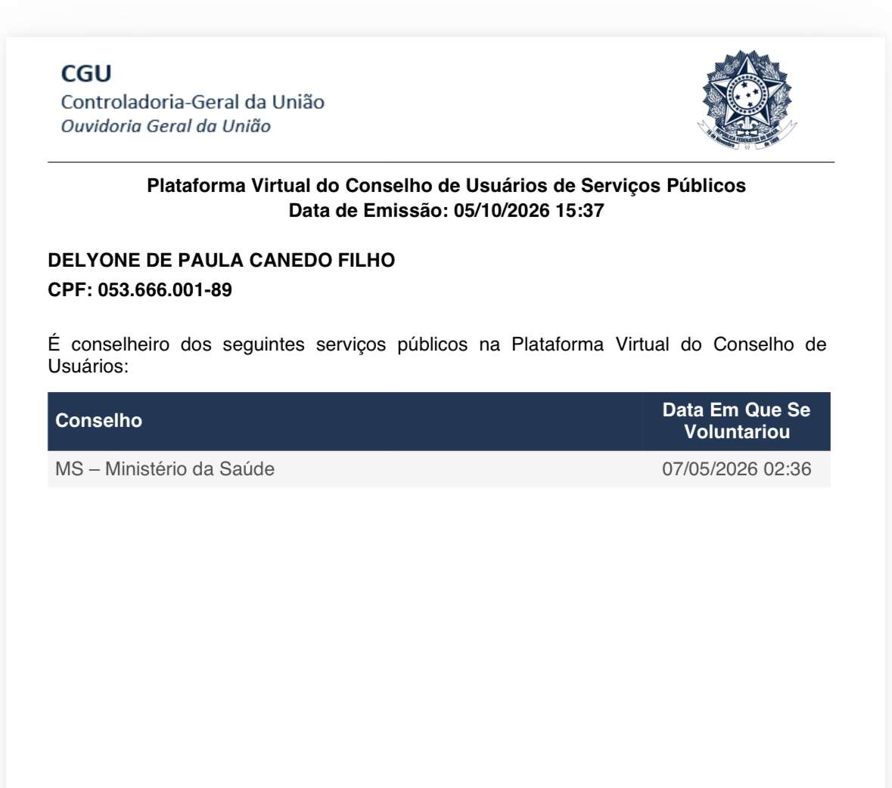
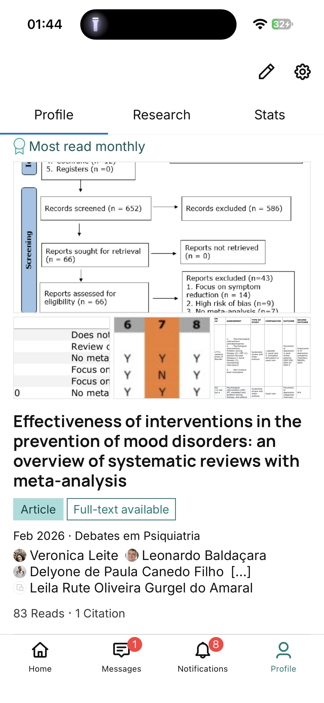
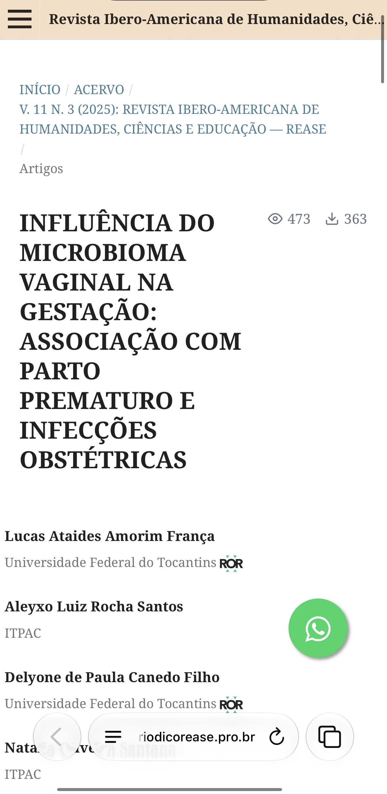
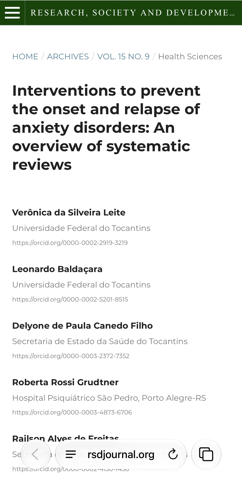
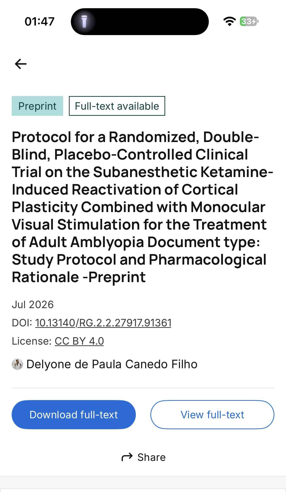
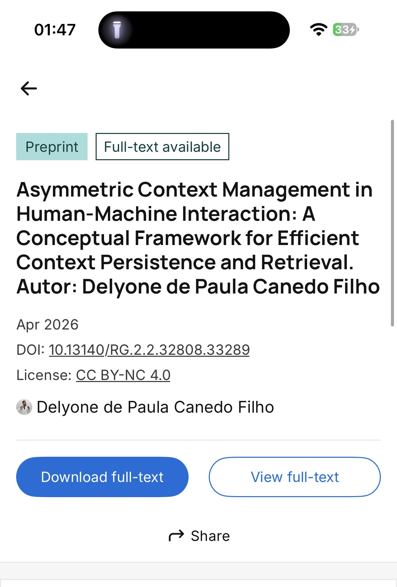
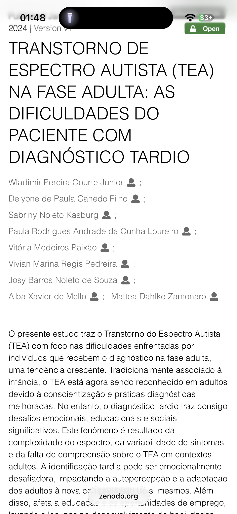
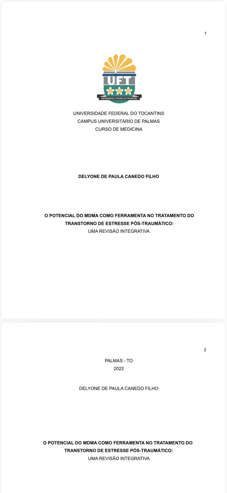
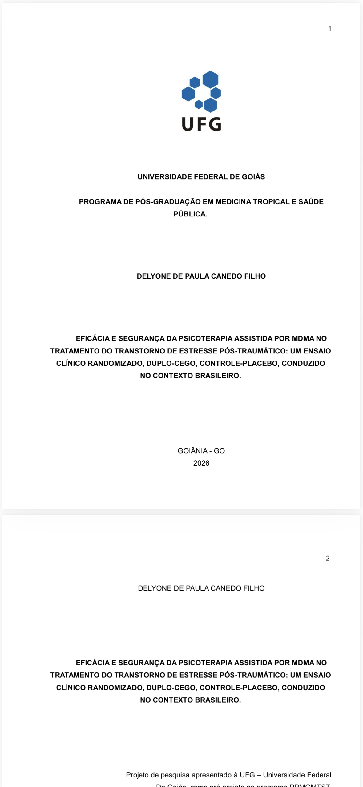
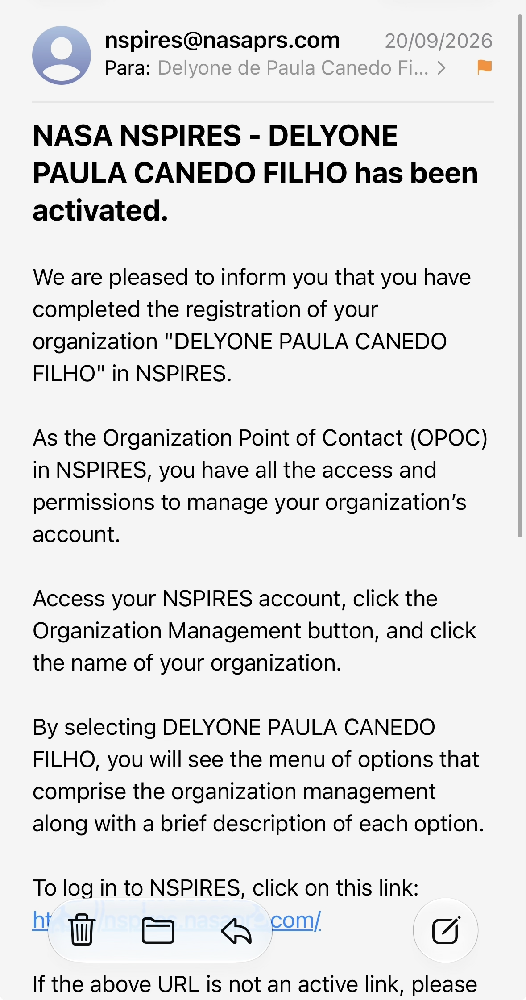
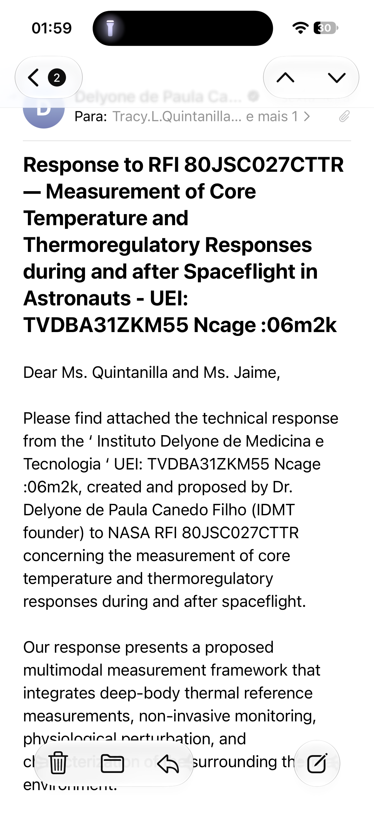
Os registros visuais contam parte da história; os documentos originais permanecem disponíveis para consulta.
Documento de solução/proposta preservado no acervo de contribuições.
Abrir PDF →Documento técnico de projeto preservado no acervo.
Abrir arquivo →